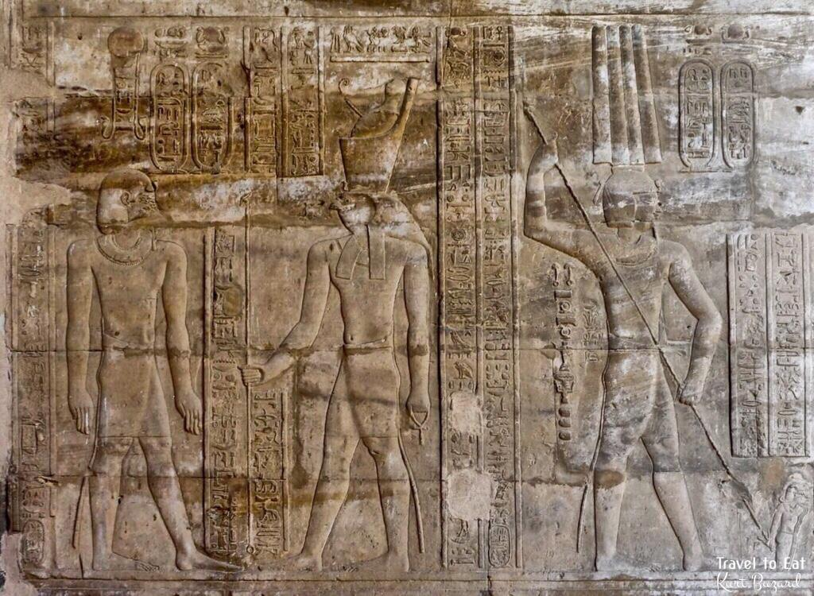
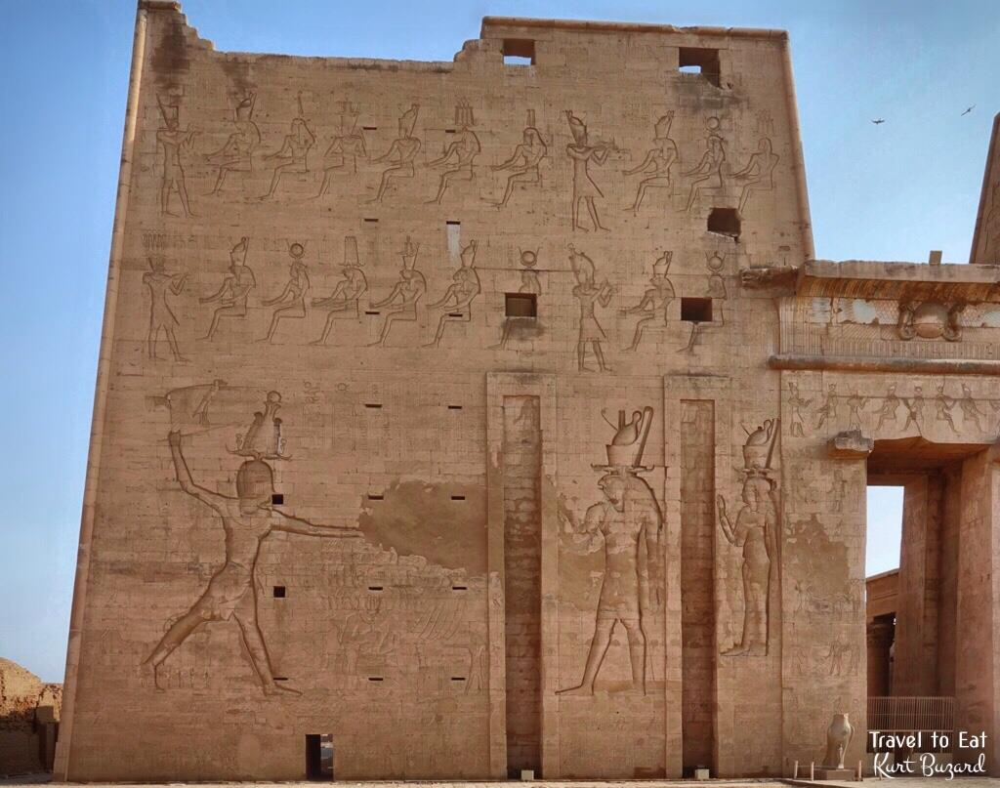
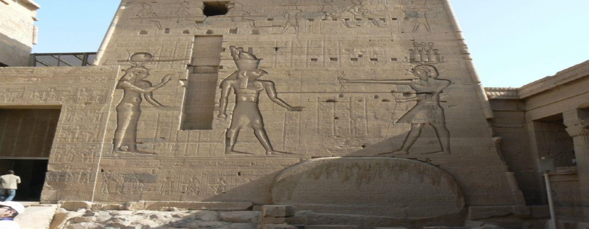

بطليموس التاسع «لاثيروس» وصراع أمه كليوباترا ومأساة كليوباترا الرابعة
📜 الترجمة الأكاديمية والتحليل التاريخي
الصفحات 64–65• ارتقاء العرش واللقب التهكمي (116 ق.م): عند وفاة بطليموس الثامن (فيسكون)، ترك ولدين وبنتاً. تولى ابنه الأكبر بطليموس التاسع سوتير الثاني العرش عام 116 ق.م، وتزوج من أخته كليوباترا الرابعة. أطلق عليه أهل الإسكندرية لقب «لاثيروس» (Lathyros) لأنه كان شديد الولع بتناول حبوب الحمص!
• استبداد الملكة الأم كليوباترا الثالثة: كانت الملكة الأم راغبة في السيطرة المطلقة على مقاليد الحكم، فأثارت المكائد والفتن بين ابنها وابنتها، وأجبرت بطليموس التاسع على تطليق زوجته كليوباترا الرابعة رغم حبه الشديد لها!
• هروب كليوباترا الرابعة ومأساتها في سوريا: فرت كليوباترا الرابعة من مصر متجهة إلى سوريا، وشرعت في تجهيز جيش لغزو مصر واسترداد عرشها المسلوب. وفي طريقها التقت بابن عمها الملك السلوقي أنطيوخوس التاسع وتزوجته. وكان الأخير يخوض حرباً ضروساً ضد أخيه غير الشقيق أنطيوخوس الثامن. انتهت الحرب بهزيمة أنطيوخوس التاسع، ففرت كليوباترا الرابعة ولجأت إلى معبد الإلهة أرتميس في دافني بسوريا مستجيرة بحق اللجوء الديني المقدس (Right of Asylum).
• جريمة قتل بشعة وانتهاك حرمة المعبد: كانت زوجة أنطيوخوس الثامن هي «كليوباترا تريفينا»، وهي أخت كليوباترا الرابعة غير الشقيقة! قررت تريفينا بدافع الحقد والانتقام قتل أختها؛ فاقتحم جنودها حرم معبد أرتميس، وحينما تشبثت كليوباترا الرابعة بمذبح المعبد قطعوا ذراعيها وسحلوها إلى خارج المعبد وقتلوها بدم بارد!
• الانتقام الدامي وطرد بطليموس التاسع: بعد سنوات قليلة، انتصر أنطيوخوس التاسع على أخيه وأسره مع زوجته تريفينا، وأمر على الفور بإعدام تريفينا ثأراً وانتقاماً لمقتل زوجته الحبيبة كليوباترا الرابعة. وفي مصر، واصلت الملكة الأم كليوباترا الثالثة نسج الدسائس ضد ابنها بطليموس التاسع حتى اتهمته كذباً بمحاولة قتلها، فثار عليه أهل الإسكندرية واضطروه للفرار إلى جزيرة قبرص!
🏛️ ACADEMIC ENGLISH TEXT
Pages 64–65"Ptolemy IX (Soter II) Lathyros (116–107 BC)"
"When Ptolemy VIII died, he left two sons and a daughter. Ptolemy IX ascended the throne in 116 BC, and he married his sister Cleopatra IV. The people of Alexandria called him Lathyros because he likes to eat chickpea a lot."
"Queen Cleopatra III wanted to dominate the throne so she created trouble for her son and daughter, she forced him to divorce his wife queen Cleopatra IV even though he loved her very much."
"Cleopatra IV escaped from Egypt, and went to Syria. She prepared an army to invade Egypt in order to regain the throne, on her way she met her cousin Antiochus IX and married him. During this time Antiochus IX was fighting Antiochus VIII, the wars between them ended with the defeat of Antiochus IX and therefore Cleopatra IV took refuge (حق اللجوء) in the temple of Artemis in Syria."
"The wife of Antiochus VIII Cleopatra Tryphaena decided that her half sister Cleopatra IV should be killed, as result the soldiers went to the temple and dragged out Cleopatra IV from the temple after they cut her arms, and they killed her outside the temple. A few years later on, Antiochus IX succeeded in defeating Antiochus VIII and he captured him and his wife, then he ordered that the wife of Antiochus VIII should be killed in order to take revenge from the death of his beloved wife Cleopatra IV."
"Queen Cleopatra III continued to create trouble for her son Ptolemy IX Soter II, and finally she accused him of trying to kill her, so the people of Alexandria revolted against him, as result that he was forced to escape from Egypt to Cyprus where he lived."
تخيّل مأساة الملكة المصرية كليوباترا الرابعة: طردتها أمها الجاحدة من حضن زوجها المحب، فذهبت إلى بلاد الشام لتجمع جيشاً تعود به إلى الإسكندرية، لكن القدر قادها إلى مواجهة أختها الشقيقة «تريفينا». وحينما لجأت كليوباترا الرابعة إلى المعبد المقدس مستجيرة بآلهة الصيد أرتميس، لم يرحمها حقد أختها، فقطع الجنود أيديها وهي متمسكة بالمذبح وسحلوها جثة هامدة! دارت عجلة الزمن سريعاً، ليقع الزوج القاتل وزوجته الحاقدة في قبضة أرمل كليوباترا الرابعة، فأذاق تريفينا نفس المصير، في واحدة من أكثر قصص الانتقام إثارة في العالم الهيلينستي القديم!

نقش الملك بطليموس التاسع سوتير الثاني — معبد حورس بإدفو
يظهر هذا النقش الملك بطليموس التاسع سوتير الثاني (لاثيروس) بالزي الملكي الفرعوني التقليدي، متعبداً أمام الإله حورس بهدتي على جدران معبد إدفو. وعلى الرغم من الاضطرابات الهائلة في الإسكندرية والوجه البحري، حرص ملوك البطالمة على استرضاء كهنة الصعيد بتسجيل أسمائهم وإتمام زخارف المعابد الكبرى.
بطليموس العاشر «ألكسندر الأول» وجريمة سرقة التابوت الذهبي للإسكندر الأكبر
📜 الترجمة الأكاديمية والتحليل التاريخي
الصفحات 65–66• تتويج بطليموس العاشر ومقتل أمه كليوباترا الثالثة: بعد طرد بطليموس التاسع، عيّنت الملكة الأم كليوباترا الثالثة ابنها الأصغر بطليموس العاشر (ألكسندر الأول) ملكاً على مصر. ولكن عندما حاولت فرض وصايتها الصارمة والسيطرة الكاملة عليه، قام بطليموس العاشر بقتل أمه بالسم للتخلص من استبدادها!
• ثورة السكندريين والهروب لليونان: ارتعب أهل الإسكندرية من بشاعة جريمة قتل الملك لأمه، فثاروا ضده ثورة عارمة. خاف بطليموس العاشر على حياته وهرب إلى بلاد اليونان ليجمع جيشاً من المرتزقة لاستعادة العرش بالقوة.
• العودة وخزينة الدولة الخاوية: عاد بجيشه المرتزق ولم يجد أي مقاومة عسكرية من الشعب فاستعاد عرشه بسهولة. لكن الكارثة تمثلت في أن خزينة الدولة المصرية كانت مفلسة وفارغة تماماً، ولم يكن لديه الذهب الكافي لدفع أجور ورواتب المرتزقة اليونانيين الذين جلبهم معه!
• أعظم خطيئة تدنيس في تاريخ الإسكندرية (التابوت الزجاجي): لحل أزمته المالية، ارتكب بطليموس العاشر جريمة شنعاء لا تُغتفر: اقتحم مقبرة الإسكندر الأكبر الملكية (السوما)، وسرق التابوت الجنائزي المصنوع من الذهب الخالص وصهره لسك النقود، ووضع بدلاً منه تابوتاً رخيصاً مصنوعاً من الزجاج (Glass Coffin)!
• الغضبة الشعبية ومصرع الملك غرقاً: حينما علم أهل الإسكندرية بما ارتكبه الملك من تدنيس وسرقة لمقدسات مؤسس مدينتهم العظيم، انفجرت المدينة في ثورة عارمة للمرة الثانية. حاول بطليموس العاشر الهروب عن طريق البحر، لكن سفينته طوردت وغرق في مياه البحر المتوسط ليلقى نهاية مأساوية جزاء خيانته.
🏛️ ACADEMIC ENGLISH TEXT
Pages 65–66"Ptolemy X (Alexander I) & The Glass Coffin Sacrilege"
"Queen Cleopatra III appointed her younger son Ptolemy X (Alexander I) to be the new king of Egypt. When Cleopatra III tried to control the new king, as a result he killed her by poison."
"The people of Alexandria revolted against him, and he got scared, and he escaped from Egypt to Greece in order to prepare an army to regain his throne back."
"When he returned back with his army he didn't find any resistance from the people and he regained his throne easily. In order to pay the salaries of the Greek mercenaries who returned back with him from Greece, he found the Egyptian treasury empty."
"In order to solve this problem, he went to the tomb of Alexander the Great and replaced the golden coffin of Alexander the Great with another one made out of glass."
"When the people of Alexandria knew what happened to the coffin of Alexander the Great, they revolted against the king. For the second time he tried to escape from Egypt but he was drowned while escaping."
كان جسد الإسكندر الأكبر يرقد بسلام لأكثر من قرنين داخل تابوت من الذهب الخالص يزن مئات الكيلوجرامات تحت قبة ضريحه الشهير، ويُزار كأقدس مزار إمبراطوري في العالم القديم. لكن بطليموس العاشر المفلس، المحاط بسيوف المرتزقة المطالبين برواتبهم، ارتكب المحظور: دخل الضريح ليلاً، ونزع الجثمان النبيل، وصهر التابوت الذهبي إلى عملات نقدية، واستبدله بتابوت من الزجاج الشفاف! لم يغفر له السكندريون هذا التدنيس قط، فكانت ثورتهم بمثابة طوفان بشري ألقى به في قاع البحر غريقاً منبوذاً!
العودة الثانية لبطليموس التاسع ومأساة برينيكي الـ 19 يوماً وسحل بطليموس الحادي عشر
📜 الترجمة الأكاديمية والتحليل التاريخي
الصفحات 66–67• استدعاء بطليموس التاسع من قبرص (88 ق.م): استدعى أهل الإسكندرية ملكهم المنفي بطليموس التاسع سوتير الثاني ليعود إلى عرش مصر عام 88 ق.م. وفور عودته، عيّن ابنته الملكة برينيكي الثالثة شريكة له في الحكم (Co-regent). حظيت برينيكي بحب وشعبية جارفة بين السكندريين لعدلها وحكمتها وسياستها السلمية.
• انحسار السيادة البطلمية وثورات طيبة: تذكر كتب التاريخ أن سلطة بطليموس التاسع الفعلية لم تكن تتجاوز الإسكندرية ومنف وبعض أجزاء مصر الوسطى؛ إذ فقد السيطرة على طيبة والصعيد إثر ثورات وطنية عارمة قمعها بوحشية ودمر معالم طيبة القديمة.
• طلب المساعدة الرومانية ووفاة الملك (80 ق.م): في أواخر أيامه، تصاعد نفوذ روما كقوة عظمى تتدخل في شؤون الشرق. طلبت روما منه إرسال أسطوله الحربي لمعاونتها في حربها ضد ملك البنطس ميثريداتس، لكن بطليموس التاسع توفي عام 80 ق.م قبل أن يتخذ قراره.
• مأساة زواج برينيكي الثالثة القسري: بوفاة الملك، أُجبرت الملكة المحبوبة برينيكي الثالثة على الزواج من ابن عمها بطليموس الحادي عشر (ألكسندر الثاني)، وهو الابن الشرعي لبطليموس العاشر. كان قد نشأ بمصر، ثم أُسر في آسيا الصغرى، وفر إلى روما ليعيش سنوات في كنف الدكتاتور الروماني سولا (Sulla) الذي دفعه للعودة لحكم مصر.
• الجريمة النكراء وسحل الملك وتقطيعه إرباً: تزوج بطليموس الحادي عشر من الملكة برينيكي بهدف الجلوس على العرش فقط. وبعد 19 يوماً فقط من الزفاف، قام باغتيال الملكة برينيكي بدم بارد! وفي صباح اليوم التالي، ثار حرس القصر وأهالي الإسكندرية في موجة غضب عارمة، فاقتحموا القصر الملكي، وسحلوا الملك في الشوارع حتى ساحة الجمنازيوم، ومزقوه إرباً وقطعاً صغيرة (tore him to pieces)!
🏛️ ACADEMIC ENGLISH TEXT
Pages 66–67"Restoration of Ptolemy IX & The Tragic Murder of Queen Berenice"
"The people of Alexandria revolted back Ptolemy IX to be their king when he returned from Cyprus to Egypt in 88 BC. He reappointed his daughter Berenice to be his co-regent. Queen Berenice was very popular among the people of Alexandria, because she ruled in a peaceful way."
"It should be mentioned that the authority of king Ptolemy Soter II over Egypt didn't exceed Alexandria & Memphis, perhaps parts of Middle Egypt; in other words, he didn't have any control over Theban."
"Before the death of Ptolemy IX Soter II the influence of Rome was increasing in the ancient world. Rome asked him to help Rome in her war against Mithridates; before taking any decision he died."
"Upon the death of her father queen Berenice was forced to marry her cousin Ptolemy XI (Alexander II) who was the legitimate son of Ptolemy X. Ptolemy Alexander II spent his childhood in Egypt, then he went to Asia Minor where he was captured by the Mithridates, later on he succeeded to escape to Rome where he spent a few years there, then he returned to Egypt on the request of queen Berenice."
"Ptolemy XI Alexander II married queen Berenice in order to gain the throne of Egypt; after 19 days of their marriage, he killed queen Berenice. In the following morning the palace guards and the people of Alexandria dragged him outside the royal palace, they tore him to pieces."
كانت الملكة برينيكي الثالثة أيقونة السلام والمحبة لدى أهل الإسكندرية؛ وحينما عاد الشاب بطليموس الحادي عشر مدعوماً من روما وتزوجها، اعتقد الجميع أن الاستقرار عاد أخيراً. لكن طمعه الأعمى ورغبته في الاستبداد دفعاه لقتل العروس المحبوبة بعد 19 يوماً فقط! لم ينتظر السكندريون محاكمة، بل اقتحم الحرس والمواطنون مخدع الملك وسحلوه إلى ساحة الألعاب الرياضية ومزقوه بأيديهم إرباً، مسدلين الستار على آخر سليل شرعي مباشر للبطالمة، لتجد مصر نفسها وجهاً لوجه أمام خطر الغزو الروماني المباشر!
بطليموس الثاني عشر «الزمار» (Auletes) وشراء اعتراف روما بـ 6000 وزنة ذهبية
📜 الترجمة الأكاديمية والتحليل التاريخي
الصفحات 68–70• الخوف من الضم الروماني واستدعاء أوليتيس (80 ق.م): بعد سحل بطليموس الحادي عشر، أدرك السكندريون أن روما قد تتخذ الحادث ذريعة لاحتلال مصر، فسارعوا باستدعاء ابن غير شرعي لبطليموس التاسع من آسيا الصغرى، وهو بطليموس الثاني عشر. عاد وتوج عام 80 ق.م وتلقب بـ «نيوس ديونيسوس» (ديونيسوس الجديد)، وتزوج من أخته تريفينا (كليوباترا الخامسة/السادسة)، بينما تولى شقيقه حكم قبرص.
• لقب «الزمار» والتتويج في منف (76 ق.م): اشتهر بلقب «أوليتيس» (Auletes - عازف الفلوت/الزمار) بسبب ولعه بالعزف وحضور الحفلات الموسيقية. تُوّج رسمياً في مدينة منف عام 76 ق.م على يد كهنة المعبود بتاح. وبما أن تنصيبه كان باختيار السكندريين، رفض مجلس الشيوخ الروماني (السناتور) الاعتراف بشرعيته.
• فزاعة الوصية الرومانية وابتزاز مصر: نشر الرومان شائعة تفيد بأن بطليموس الحادي عشر القتيل ترك وصية سرية لروما يورثها فيها مصر كاملة وممتلكاتها بعد موته، ورغم أنهم لم يبرزوا تلك الوصية المزعومة قط، إلا أنهم استخدموها كسيف مصلت لابتزاز أوليتيس طوال عشرين عاماً!
• استنزاف أموال الشعب وشراء يوليوس قيصر: لجأ أوليتيس إلى فرض ضرائب باهظة وخانقة على الشعب المصري لجمع أموال الرشى لأعضاء مجلس الشيوخ الروماني، مما جعل الشعب يمقته كرهاً شديداً. وأخيراً، نجح عام 59 ق.م في شراء دعم واعتراف يوليوس قيصر (Julius Caesar) وبومبي، بعد أن دفع لقيصر رشوة فلكية بلغت 6000 وزنة ذهبية (Talents)، ليعلن قيصر اعتراف روما بأوليتيس كـ «حليف وصديق للشعب الروماني»!
• احتلال قبرص وهروب أوليتيس لروما (58 ق.م): لم يتضمن الاتفاق حماية قبرص؛ فقامت روما بضم جزيرة قبرص وطرد شقيق الملك الذي انتحر بالسم. طالب السكندريون الملك باستعادة قبرص أو قطع العلاقات مع روما، وحينما عجز عن تهدئتهم فر هارباً إلى روما عام 58 ق.م ليطلب التدخل العسكري!
• تمرد برينيكي الرابعة ومصرع العريس الخشن: في غياب أوليتيس، حكمت ابنته برينيكي الرابعة مصر بمفردها. بحث السكندريون عن زوج لها، فوقع الاختيار على أمير سلوقي خشن الطباع؛ وبعد أسبوع واحد فقط من الزفاف، أمرت برينيكي حرس القصر بخنقه حتى الموت! ثم تزوجت من ضابط يوناني يُدعى أرخيلاوس (Archelaus) ليدير شؤون الدولة.
• العودة بحراب الفيالق الرومانية وإعدام ابنته: لم يتحمل أوليتيس ضياع العرش، فوعد القنصل الروماني في سوريا (أولوس غابينيوس) برشوة ضخمة قدرها 10,000 (أو 1,000) وزنة ذهبية. أرسل القنصل الفيالق الرومانية (وكان يقود فرسانها الشاب مارك أنطوني)، فهزموا أرخيلاوس واستعاد أوليتيس العرش عام 55 ق.م. وفور جلوسه على الكرسي، أمر بإعدام ابنته برينيكي الرابعة وزوجها بلا رحمة!
🏛️ ACADEMIC ENGLISH TEXT
Pages 68–70"Ptolemy XII Neos Dionysos (Auletes) 80–51 BC"
"After the death of Ptolemy XI, Alexandria discovered that Rome might interfere or take Egypt, so they brought Ptolemy XII from Asia Minor. Ptolemy XII parentage is uncertain, he is said to have been the son of Ptolemy Lathyros by an unknown wife or mistress, he was probably illegitimate."
"Ptolemy XII returned from Asia Minor to be crowned in 80 BC and took the name of Ptolemy Neos Dionysos, and married his sister Tryphaena who took the name of Cleopatra VI, while his brother became king of Cyprus. Ptolemy Neos Dionysos also known as Auletes (the piper) was crowned in Memphis in 76 BC by the priests of Ptah. As he was chosen by the people of Alexandria, Rome refused to acknowledge him."
"The Romans spread a rumor that Ptolemy XI left Egypt in a will to Rome saying that Egypt should be part of Roman properties after his death, however they never showed this will. Such claim was kept for about twenty years as a result that Ptolemy Neos Dionysos spent a great deal of his reign and money seeking the recognition of Rome with the help of Caesar and Pompey."
"This act led Ptolemy XII to increase taxes on the Egyptian people to pay bribes to Roman senators; as a result the Egyptians hated him more and more. Finally he was able to purchase the help of Caesar after paying him 6000 talents of gold."
"Ptolemy XII was recognized as an ally and friend of the Roman people, however nothing was said about Cyprus and Rome took Cyprus. The Alexandrians asked the king to regain Cyprus or cut relations; when he failed to calm them, he went to Rome."
"His daughter Berenice ruled Egypt. Suggestions were made that she marry a Seleucid prince; within a week of marriage, she ordered the palace guard to kill him! Then a Greek officer called Archelaus married Berenice. Ptolemy XII promised the Roman Proconsul in Syria a 1000 (10,000) talents of gold to restore his throne. The Roman legions restored him; once he regained the throne, he killed his daughter Berenice and her husband."
كان بطليموس الثاني عشر مهووساً بالفلوت ومسابقات العزف، غير مبالٍ بآلام شعبه. وحينما هددته روما بوثيقة وصية وهمية، حوّل مصر إلى منجم ذهب يدفع منه رشى خرافية لأقطاب روما (6000 وزنة ذهبية لقيصر وبومبي). وعندما ثار شعبه وخلعوه وعينوا ابنته برينيكي، لم يتردد في الذهاب صاغراً لروما، واستئجار الجيش الروماني بحراب الفيالق التي اقتحمت الدلتا وسفكت دماء المصريين، ليدخل الإسكندرية محمولاً على أكتاف الرومان، وأول قرار يتخذه هو قطع رأس ابنته برينيكي ليرتدي تاجه الملطخ بالدماء والديون!
العمارة الدينية: صرح معبد إدفو الشامخ ووصية أوليتيس الأخيرة عام 51 ق.م
📜 الترجمة الأكاديمية والتحليل التاريخي
الصفحات 70–72• الأعمال المعمارية المحدودة وصرح إدفو: لم يقم بطليموس الثاني عشر بأعمال إنشائية ضخمة نظراً لتبديد ثروات البلاد في الرشى والحروب، إلا أنه أنجز عملاً معمارياً خالداً في تاريخ مصر: أتم تشييد وزخرفة صرح معبد حورس بإدفو (Pylon of Edfu)، وهو الصرح العظيم الذي يبلغ ارتفاعه 36 متراً وعرضه 79 متراً.
• مشهد قمع الأعداء أمام حورس وحتحور: خُلّد الملك على الواجهة الضخمة لصرح إدفو في المنظر الفرعوني الخالد «قمع الأعداء» (Smiting the Enemies)؛ حيث يظهر أوليتيس ضخماً وهو يمسك الأعداء من نواصيهم بالدبوس ليفتك بهم أمام الإله حورس بهدتي والإلهة حتحور ربة دندرة، مقدماً نفسه كملك مصري قوي حامٍ للحدود رغم خضوعه الفعلي لروما! كما ترك نقوشاً مماثلة على صرح معبد إيزيس بفيلة.
• وفاة الملك والوصية المصيرية (51 ق.م): توفي بطليموس الثاني عشر في أوائل عام 51 ق.م. وترك وصية رسمية أودع نسخة منها في روما؛ تنص على أن تتزوج ابنته الكبرى كليوباترا السابعة (كانت في سن الثامنة عشرة) من ابنه الأصغر بطليموس الثالث عشر (كان صبياً في سن العاشرة)، ليحكما مصر معاً كشريكين في العرش.
• إعلان كليوباترا شريكة في الحكم والوصاية الرومانية: تذكر الروايات التاريخية أنه رقّى ابنته الذكية كليوباترا السابعة لتكون شريكته في الحكم (Co-regent) قبيل وفاته مباشرة؛ كما أوصى بأن يكون مجلس الشيوخ الروماني والقائد الروماني الشهير بومبي (Pompey) هو الوصي القانوني (Legal Guardian) على ولديه الصغيرين، مما مهّد لافتتاح الفصل الأخير والأعظم دراماتيكية في تاريخ مصر البطلمية!
🏛️ ACADEMIC ENGLISH TEXT
Pages 70–72"Ptolemy XII Building at Edfu & The Will of 51 BC"
"Ptolemy XII did little building; he finished the pylon of Edfu, where he appears before Horus, and again on the pylon of Philae."
"He died in 51 BC leaving a will that his son Ptolemy XIII and his daughter Cleopatra (VII) would marry and rule Egypt together, and it was said that he elevated Cleopatra to be his co-regent immediately before his death."
[Figures on pages 71–72]:
• "Ptolemy XII Neos Dionysos Smiting His Enemies before Horus and Hathor. Pylon of Edfu Temple Egypt."
• "Ptolemy XII in front of god Horus and goddess Hathor."
• "Hellenistic bust of Ptolemy XII from Ptolemaic Egypt, 1st century BC, now in the Louvre, Paris."
حينما تقف مع فوجك السياحي أمام صرح معبد إدفو الشاهق، سترى أوليتيس مرسوماً بحجم أسطوري وهو يرفع دبوس القتال ليحطم رؤوس أعدائه الأسرى أمام الإله حورس، كأنه تحتمس الثالث أو رمسيس الثاني في أوج مجدهما! ولكن ما تكشفه الوثائق التاريخية للمرشد السياحي هو المفارقة الصادمة: فهذا الملك "الخارق" على جدران إدفو كان في الواقع ملكاً مديوناً، يرتجف أمام روما، دفع آخر درهم في خزائن بلاده رشى لقيصر، وأوصى في ورقة موته بأن تضع روما يدها كوصي على طفليه، مسلماً شعلة العرش لابنته الداهية كليوباترا السابعة!

منظر قمع الأعداء أمام حورس وحتحور — صرح معبد إدفو
المشهد الملكي الضخم على البرج الغربي لصرح معبد إدفو؛ يظهر فيه بطليموس الثاني عشر الزمار ممسكاً بنواصي الأسرى الأجانب لضربهم بالدبوس أمام الإله حورس بهدتي وقرينته الإلهة حتحور.

بطليموس الثاني عشر متعبداً أمام حورس وحتحور
منظر مسجل على جدران المعبد يمثل الملك بطليموس الثاني عشر بالتاج المزدوج وهو يقدم رمز العدالة (الماعت) والقرابين المقدسة لحورس إله السماء وحامية المعبد حتحور.
✍️ بنك الأسئلة والاختبار التفاعلي الشامل (١٠ أسئلة معتمدة)
تم إعداد هذه الأسئلة من واقع امتحانات كود 054GM بجامعة 6 أكتوبر؛ لاختبار فهمك الدقيق للتواريخ، الألقاب، والدسائس السياسية في المحاضرة العاشرة.